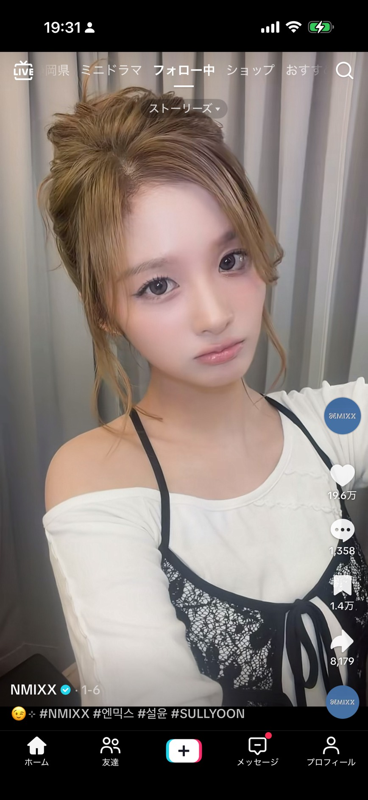
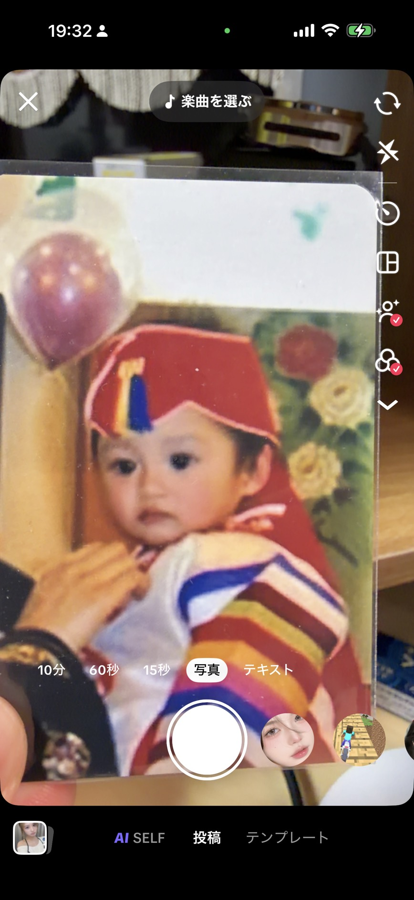
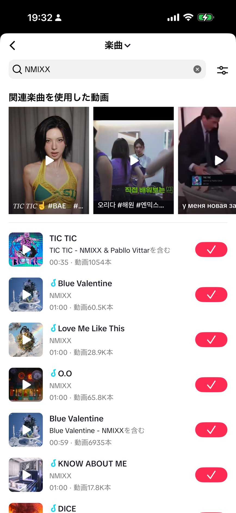

公式音源を使って投稿し、拡散でNMIXXを応援する方法
TikTokでは、公式音源を使った投稿と拡散で応援できます。カムバック曲の音源を選び、ハッシュタグを付けて投稿しましょう。

ホーム画面で下の「＋」ボタンをタップします。

投稿画面上部の「楽曲を選ぶ」をタップします。

「NMIXX」と検索してカムバック曲を選び、ハッシュタグを付けて投稿します。
MV再生のルールもあわせてチェック
投票ページや音楽番組ガイドへ戻る